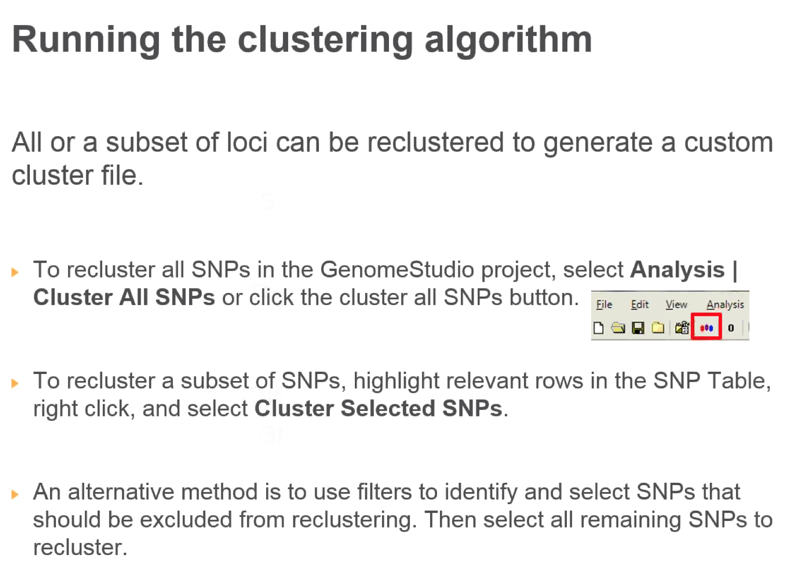

Last updated: 2019-12-02
Checks: 2 0
Knit directory: PSYMETAB/
This reproducible R Markdown analysis was created with workflowr (version 1.5.0). The Checks tab describes the reproducibility checks that were applied when the results were created. The Past versions tab lists the development history.
Great! Since the R Markdown file has been committed to the Git repository, you know the exact version of the code that produced these results.
Great! You are using Git for version control. Tracking code development and connecting the code version to the results is critical for reproducibility. The version displayed above was the version of the Git repository at the time these results were generated.
Note that you need to be careful to ensure that all relevant files for the analysis have been committed to Git prior to generating the results (you can use wflow_publish or wflow_git_commit). workflowr only checks the R Markdown file, but you know if there are other scripts or data files that it depends on. Below is the status of the Git repository when the results were generated:
Ignored files:
Ignored: .drake/
Ignored: data/processed/
Ignored: data/raw/
Untracked files:
Untracked: analysis/QC/
Untracked: post_imputation_qc.log
Untracked: pre_impute_qc.out
Untracked: qc_part2.out
Unstaged changes:
Deleted: pre_imputation_qc.out
Deleted: qc_part1.out
Note that any generated files, e.g. HTML, png, CSS, etc., are not included in this status report because it is ok for generated content to have uncommitted changes.
These are the previous versions of the R Markdown and HTML files. If you’ve configured a remote Git repository (see ?wflow_git_remote), click on the hyperlinks in the table below to view them.
| File | Version | Author | Date | Message |
|---|---|---|---|---|
| Rmd | 0dd02a7 | Jenny | 2019-12-02 | modify website |
Notes from Illumina webinar: GenomeStudio Genotyping: Creating Custom Cluster Files for Infinium Arrays.

See technical note with additional details.